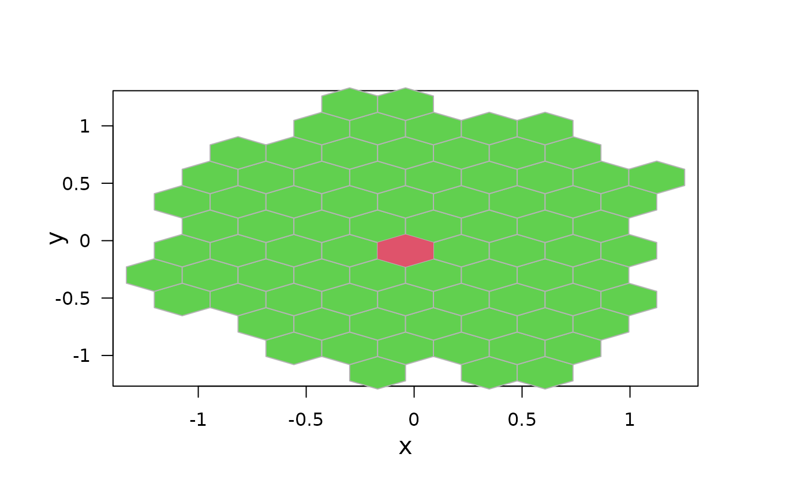
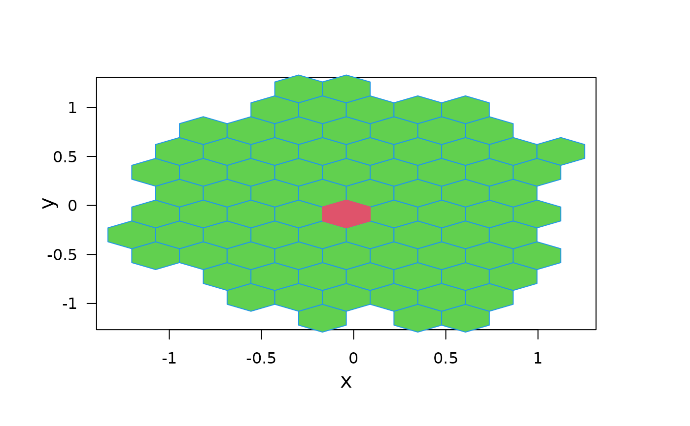
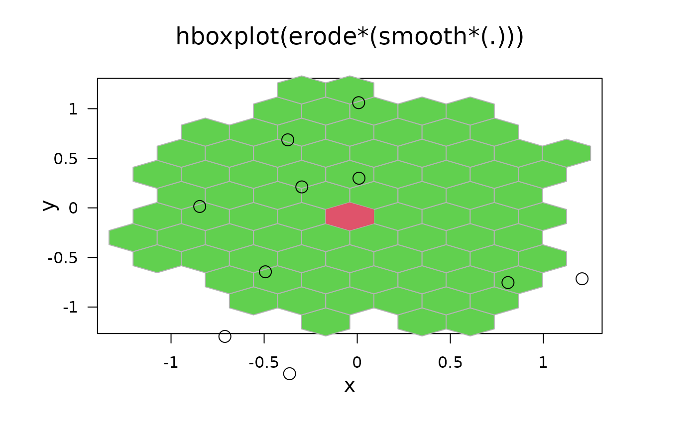

hboxplot.RdIf bin is an eroded hexbin object, i.e.,
an erodebin object, hboxplot() plots the high counts cells
selected by erode(). By default, the high counts
cells contain 50 percent of the counts so analagous to the
interquartile “range”. The function distinguishes the last
cells eroded using color. These cells correspond to one definition of the
bivariate median.
an object of class hexbin.
global x- and y-axis plotting limits for multiple plots.
arguments for polygon() each of
length two, the first for the median, the second for the other cells.
colors (“pen numbers”) for polygon().
plot limit expansion factor when xbnds is
missing.
either 'on' or 'off' are the allowed arguments, when on everything is clipped to the plotting region.
logical value to reshape the plot although xbnds
and ybnds are present.
x- and y- axis labels and main title
invisibly, the hexViewport() used internally.
Used to add to the plot afterwards.
see in grid.hexagons.
The density, border, and pen arguments correspond
to the polygon function calls for plotting two types of
cells. The cell types, pen numbers and suggested colors are
| TYPE | PEN | COLOR |
| cells of bin | 2 | light gray |
| last eroded cells of bin (median cells) | 1 | black |
The erode components of the hexbin objects must be present for the medians cells to plot.
When xbnds is missing or reshape is true, the plot
changes graphics parameters and resets them. When xbnds is
missing the function also zooms in based on the available data to
provide increased resolution.
The zoom used the hexagon cell centers. The unzoom argument backs off a bit so the whole hexagon will fit in the plot.
Hboxplot() is used as a stand alone function, for producing separate
legends .....
set.seed(753)
## boxplot of smoothed counts
x <- rnorm(10000)
y <- rnorm(10000)
bin <- hexbin(x,y)
erodebin <- erode(smooth.hexbin(bin))
hboxplot(erodebin)

hboxplot(erodebin, density = c(32,7), border = c(2,4))

hp <- hboxplot(erodebin, density = c(-1,17),
main = "hboxplot(erode*(smooth*(.)))")
pushHexport(hp)
library("grid")
grid.points(x[1:10], y[1:10])# just non-sense to show the principle
popViewport()
